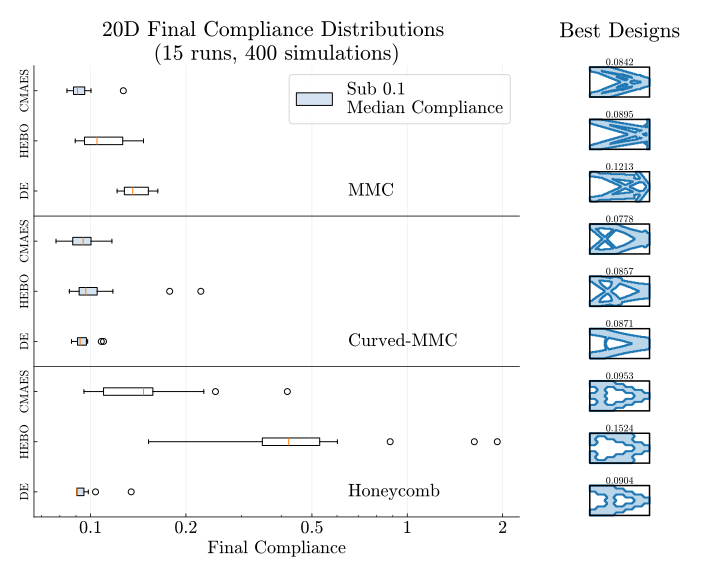

Topology Optimization of a Horizontal Cantilever
NOTE Evostar submission is awating review
During my master’s thesis project, I researched the interplay between problem description and Black-Box Optimization (BBO) procedures for Structural Topology Optimization (TO) problems.
Black-box methods offer a general framework for solving optimization problems with arbitrary objectives, geometric parameterizations, and physics models. This is in contrast to conventional, single-purpose gradient-based methods, which are not always feasible.
This research was carried out using my own Python package: tobbo, a framework I developed for setting up and solving TO problems with BBO (TO-BBO). If you’d like to try it yourself, check out the tutorial on the GitHub page. Below you can see the structural optimization of a cantilever using the CMA-ES method using the package.
In practice, engineers and researchers often spend significant simulation budget and time on algorithm selection and hyperparameter tuning for BBO methods, as performance can vary greatly across problems
Our results show that how you describe the design problem matters far more than which optimization algorithm you use. When the chosen representation captures the right structural features—like the flexible Curved MMCs—the optimizer quickly finds strong designs. But when the description is too rigid, such as with the Honeycomb setup, even advanced algorithms struggle.
A state-of-the-art optimizer can’t fix poor parameterization of the problem, but a well-chosen parameterization can make even a simple optimizer perform remarkably well.
Together with well-formulated connectivity constraints, we demonstrate that well-chosen design representations are key to achieving robust and efficient optimization outcomes in a constrained real-world engineering problem.
